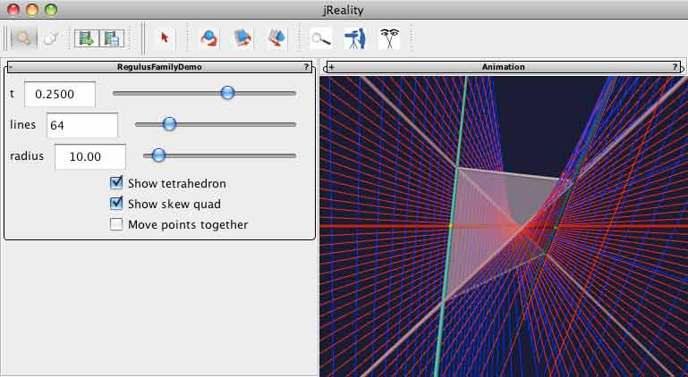

First-time users: See this introduction. to the visualization tools involved.
A quadrilateral in 3-space such that opposite sides are skew to each other, is called a skew quadrilateral, or skew quad for short. Such a skew quadrilateral determines a tetrahedron, determined by the four corners (or planes) of the quadrilateral. This configuration can be used as the base for building a family of reguli such that through each point of space (except points lying in the four planes of the tetrahedron of the skew quad), exactly one of the reguli passes. Thus, one obtains a foliation of space by these reguli, and a second foliation by their complementary reguli. (Leitschar in german: who knows the correct translation for this?)
If the four lines of the skew quad are (a,A, b, B) in their natural order, then the pairs (a,b) resp. (A,B) will belong to each regulus resp. leitschar in the family. To determine a particular regulus of the family, one needs only to specify a third line C which intersects a and b in two points (which are not vertices of the skew quad). Then the set of all lines meeting A, B, and C is the desired regulus, and the lines meeting all lines of this regulus is the desired leitschar. Another characterization of this family of reguli is that their pairwise intersection is the lines A and B, and their union is all lines intersecting both the lines A and B (the hyperbolic line congruence determined by A and B).
This application allows the user to control the choice of this third line C in a variety of ways which are described below.
There should be a panel visible to the left of the 3D graphics window labeled "RegulusFamily". If this is not present, select the menu item "Window->Left slot". The full window should appear as shown below. You can remove the panel using the same menu item. You can also drag the panel out of the window by dragging on the title bar.

Lines a and b are represented by the thick cyan lines; lines A and B are represented by the thick pink lines; and line C is represented by the thick red line. At the intersection of C with a and with b are yellow spheres. These spheres can be dragged along the lines a and b; the line C will then follow, and the resulting regulus/leitschar will be updated to reflect the new position.
Alternately, use the slider labeled t to control the position of the yellow point which lies on line a. The values t=0 and t=.5 correspond to the degenerate cases where the regulus degenerates into a pair of line pencils which share a diagonal of the tetrahedron.
One can choose whether the motion of the point controlled by the slider also moves the second point in a coordinated way, so that the approach to the degenerate cases is more symmetric, by clicking the check box labeled Move points together. (This option is not available for manual dragging of the yellow points).
There are also a checkbox to control whether the tetrahedron resp. the thicker lines represented the lines (a,b,A,B,C) should be drawn or not.
Finally, there are two sliders controlling the representation of the regulus and leitschar: